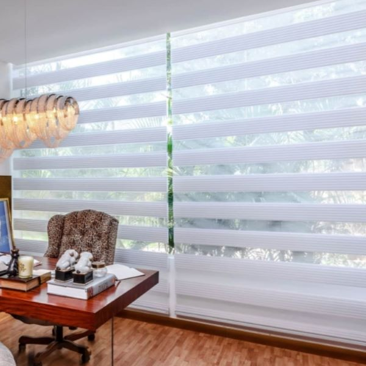
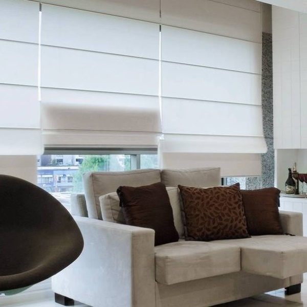
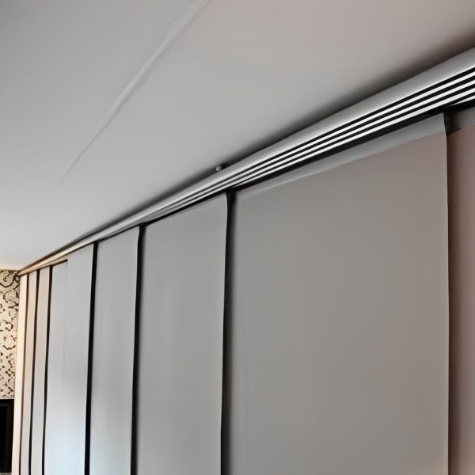
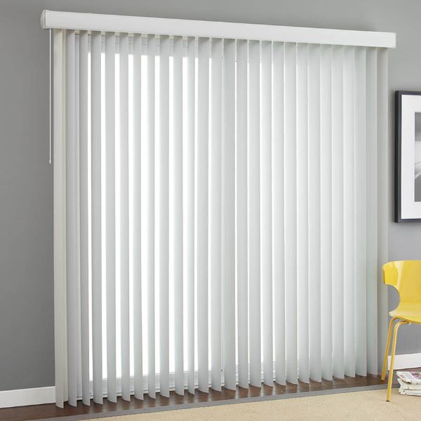
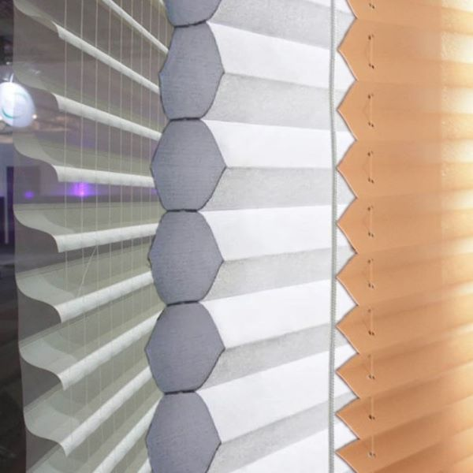
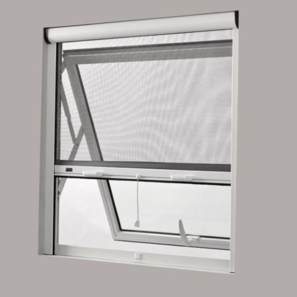

Nossos produtos
CORTINA ROLÔ
Transforme seu ambiente com cortinas rolô, trazendo elegância, privacidade e controle da luminosidade. Escolha entre uma variedade de estilos, cores e texturas para criar um visual único e acolhedor em sua casa ou escritório. As cortinas de tecidos são amplamente utilizadas em salas de estar, quartos e salas de jantar, adicionando um toque de sofisticação e aconchego a esses espaços.
ver maisPERSIANA DE MADEIRA
Adicione um toque de charme rústico com persianas de madeira. Além de proporcionarem privacidade e bloquearem a luz externa quando desejado, as persianas de madeira trazem aconchego e um estilo natural para qualquer espaço. Elas são especialmente populares em ambientes como salas de estar, cozinhas e escritórios, onde a estética rústica e acolhedora é valorizada.
ver maisPERSIANA DE ALUMINIO
Eleve o padrão do seu ambiente com persianas de metais preciosos. Seja alumínio ou ferro, essas persianas oferecem um toque de luxo e incomparáveis. Com sua durabilidade e resistência, são perfeitas para espaços que exigem estilo e requinte. Surpreenda-se com o destaque visual e a longevidade dessas persianas, proporcionando um ambiente de alto padrão que impressiona a todos.
ver maisCORTINA DUO VISION
Versatilidade e controle total da luminosidade. As persianas Duo Vision combinam faixas translúcidas e opacas, permitindo ajustar a entrada de luz conforme desejado. Ideal para ambientes residenciais e comerciais, oferecendo privacidade e estilo contemporâneo. Seu design inovador se adapta a diferentes tipos de janelas, proporcionando uma solução moderna e funcional para seu espaço.
ver maisPERSIANA ROMANA
Elegância clássica e praticidade em uma única peça. As persianas romanas se destacam por suas dobras horizontais que formam um visual sofisticado. Perfeitas para salas de estar, quartos epodendo colocar no teto também, proporcionando um ambiente aconchegante com controle de luz e privacidade. Disponíveis em uma variedade de tecidos e padrões, permitem criar um estilo personalizado que combina com sua decoração.
ver maisPERSIANA PAINEL
Modernidade e funcionalidade em grandes vãos. Os painéis persianas deslizantes são ideais para portas de vidro e janelas amplas. Com painéis individuais que se movem suavemente, permitem controlar a luminosidade e criar ambientes contemporâneos e práticos. Disponíveis em uma ampla gama de cores e texturas, como painéis persianas adicionam um toque de estilo e são mantidos ao seu espaço.
ver maisCORTINA VERTICAL
Versáteis e elegantes, as persianas verticais são perfeitas para ambientes comerciais e residenciais. Com lâminas verticais que podem ser giradas e recolhidas, proporcionando controle de luz e privacidade. Disponíveis em diferentes materiais e cores, se adaptam a diversos estilos de decoração. Fáceis de limpar e duráveis, as persianas verticais são uma escolha prática e estilosa para suas janelas.
ver maisCORTINAS ESPECIAIS
Proteja sua privacidade, controle a luminosidade e crie uma atmosfera única em cada cômodo. Com as cortinas Silhoutex, Celulares e Plissadas, você tem o poder de transformar seu espaço em um verdadeiro lar, onde o conforto e a beleza se encontram. Desfrute de todas as vantagens que essas cortinas oferecem e aproveite cada momento em sua casa, com estilo e funcionalidade incomparáveis.
ver maisTELA MOSQUETEIRA
Desfrute de noites tranquilas e dias ensolarados, sem a presença incômoda de mosquitos e outros insetos. Com as telas mosqueteiras, você pode abrir suas janelas e portas com tranquilidade, aproveitando a brisa fresca e a luz natural, enquanto mantém sua casa protegida. Não abra mão do conforto e da segurança, escolha as telas mosqueteiras e desfrute de um lar livre de pragas indesejadas.
ver mais